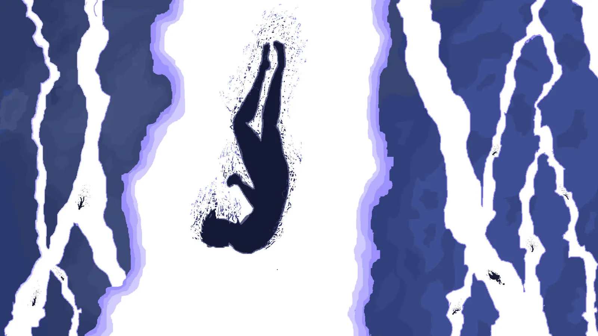

In this game, the player is tasked with solving puzzles to progress the story and discover who they are. The player will have to solve magic squares, find codes and face many more obstacles.
For this game, I was pretty much the lead technical designer and audio designer. I had to finish setting up the player and add a battery system to the flashlight. I also added a sanity system to the player. Eventually, I added a hint system as well. Unfortunately, these did not make it into the final game.
I ended up implementing a majority of the puzzles into the game. One of the first ones was a sliding block that was designed to open a locked door. I also implemented a match-three puzzle type thing, a code pad, and a lever system. I also ended up having to heavily modify the magic square puzzle to fit with the rest of the systems.
Here's a video of the tutorial level showing off some of the puzzles and everything that I worked on.
For the audio, I ended up using Unreal's built-in audio system which wasn't too bad. However, coming from an audio background I found it a bit hard to navigate. Eventually, I discovered FMOD and I wish I had used it from the beginning. I did however use it on another project.
If you would like a copy of the game let me know.